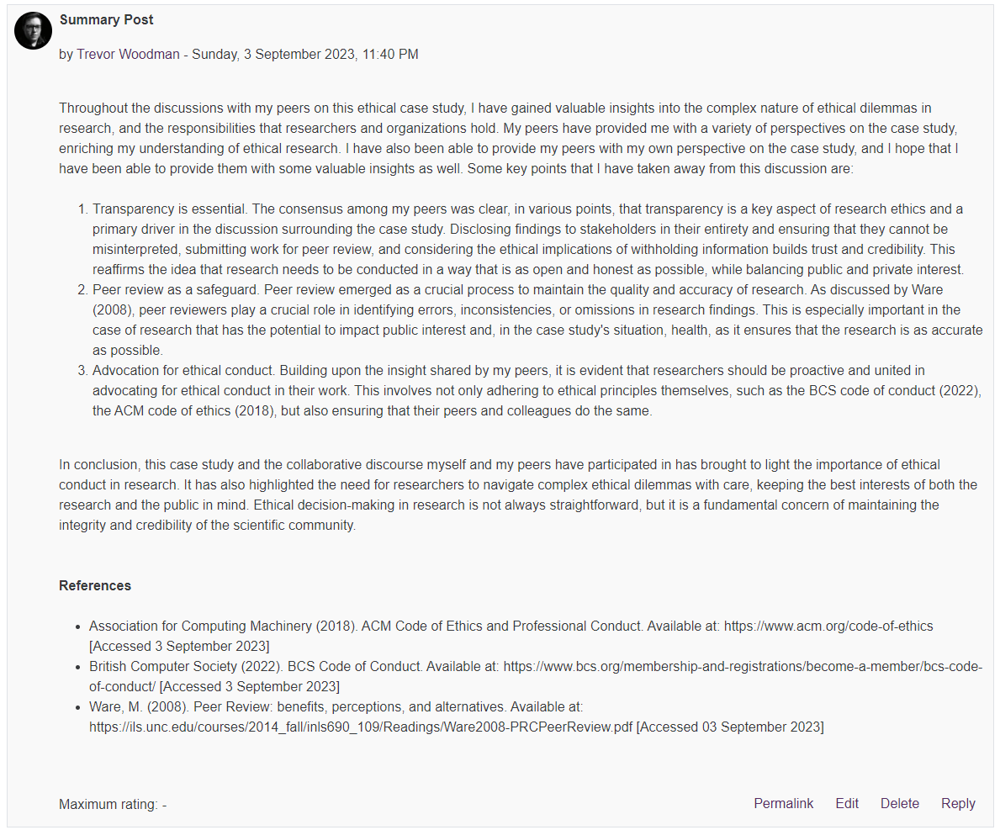

⬅️Back
Unit 9 Collaborative Discussion 2 - Week 3
Instructions
Continue with the Unit 7 Discussion forum. You should now provide a summary post into to the discussion in Unit 7 based on your initial post and the feedback from your peers. Please try to limit your posts to 200-300 words maximum. Your follow-up responses should be labelled as ‘Summary Post’. These posts should be included in your e-Portfolio.
Summary Post

Text Version
Throughout the discussions with my peers on this ethical case study, I have gained valuable insights into the complex nature of ethical dilemmas in research, and the responsibilities that researchers and organizations hold. My peers have provided me with a variety of perspectives on the case study, enriching my understanding of ethical research. I have also been able to provide my peers with my own perspective on the case study, and I hope that I have been able to provide them with some valuable insights as well. Some key points that I have taken away from this discussion are:
- Transparency is essential. The consensus among my peers was clear, in various points, that transparency is a key aspect of research ethics and a primary driver in the discussion surrounding the case study. Disclosing findings to stakeholders in their entirety and ensuring that they cannot be misinterpreted, submitting work for peer review, and considering the ethical implications of withholding information builds trust and credibility. This reaffirms the idea that research needs to be conducted in a way that is as open and honest as possible, while balancing public and private interest.
- Peer review as a safeguard. Peer review emerged as a crucial process to maintain the quality and accuracy of research. As discussed by Ware (2008), peer reviewers play a crucial role in identifying errors, inconsistencies, or omissions in research findings. This is especially important in the case of research that has the potential to impact public interest and, in the case study’s situation, health, as it ensures that the research is as accurate as possible.
- Advocation for ethical conduct. Building upon the insight shared by my peers, it is evident that researchers should be proactive and united in advocating for ethical conduct in their work. This involves not only adhering to ethical principles themselves, such as the BCS code of conduct (2022), the ACM code of ethics (2018), but also ensuring that their peers and colleagues do the same.
In conclusion, this case study and the collaborative discourse myself and my peers have participated in has brought to light the importance of ethical conduct in research. It has also highlighted the need for researchers to navigate complex ethical dilemmas with care, keeping the best interests of both the research and the public in mind. Ethical decision-making in research is not always straightforward, but it is a fundamental concern of maintaining the integrity and credibility of the scientific community.
References
- Association for Computing Machinery (2018). ACM Code of Ethics and Professional Conduct. Available at: https://www.acm.org/code-of-ethics [Accessed 3 September 2023]
- British Computer Society (2022). BCS Code of Conduct. Available at: https://www.bcs.org/membership-and-registrations/become-a-member/bcs-code-of-conduct/ [Accessed 3 September 2023]
- Ware, M. (2008). Peer Review: benefits, perceptions, and alternatives. Available at: https://ils.unc.edu/courses/2014_fall/inls690_109/Readings/Ware2008-PRCPeerReview.pdf [Accessed 03 September 2023]